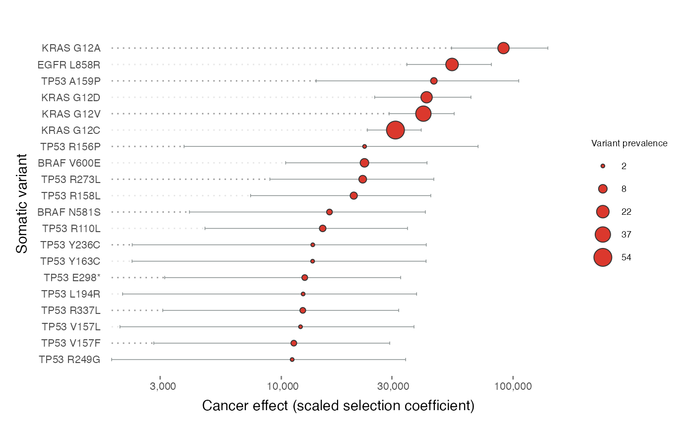
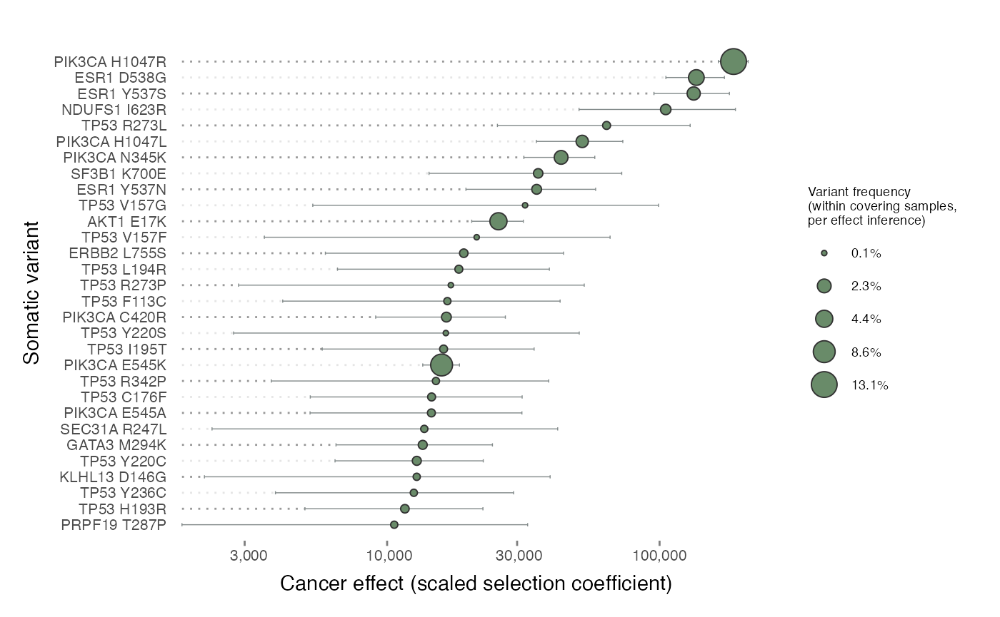
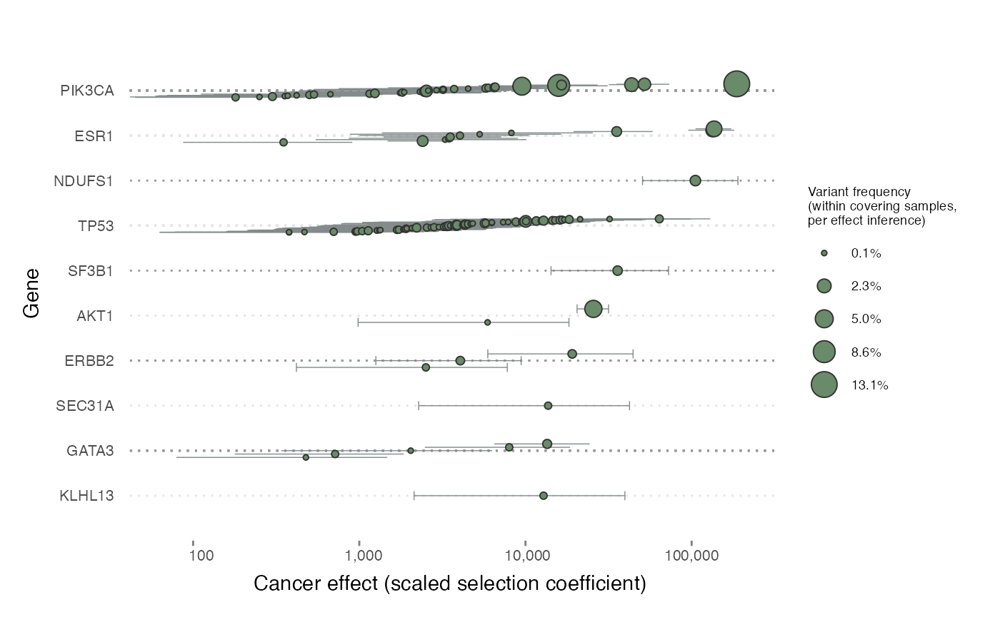

This tutorial applies some of the package’s key features to analyze publicly-available somatic variant data from tumor sequencing. We recommend that you start a fresh R/RStudio session. You can follow along by copy-and-pasting code into an R script.
Installation
Start by installing the latest release:
# Some dependencies are large, so we increase the download time limit to be safe
options(timeout = 600)
install.packages(c("remotes", "BiocManager"))
remotes::install_github("Townsend-Lab-Yale/cancereffectsizeR", dependencies = TRUE, repos = BiocManager::repositories())Regrettably, some Bioconductor releases contain versions of required
packages with bugs that cause cryptic messages in cancereffectsizeR
workflows, such as !anyNA(m32) is not TRUE or
Error in data.frame(…, check.names=F): arguments imply differing number of rows.
If you encounter these problems, the simplest solution is to upgrade
your Bioconductor version:
# Only necessary if GenomeInfoDb or MutationalPatterns errors are causing problems.
BiocManager::install(version = "3.20") # or newer, when availableIn addition to installing cancereffectsizeR, you need to install a reference data set, or refset. These refsets include genomic and gene annotations, mutational signature definitions, and more. Currently, refsets supporting the hg38 and hg19 builds of the human genome are available as separate data packages. (If you want to build your own refset to use a custom genome build or gene set for almost any species, you can.) For this tutorial, we’ll use the hg38 refset package.
options(timeout = 600)
remotes::install_github("Townsend-Lab-Yale/ces.refset.hg38@*release")Restart R/RStudio after installation. Before continuing, you may want to create a directory for this tutorial to store all the data and output in one place.
# setwd() somewhere, if desired
dir.create("CES_tutorial")
setwd("CES_tutorial")Quickstart
Theoretical overview
Very briefly, we extract mutational signatures from each sample’s SNV
mutation profile using MutationalPatterns.
The relative weights of biologically associated signatures are used to
infer trinucleotide-context-specific relative rates of SNV mutations for
each sample. Cohort-wide neutral gene mutation rates are calculated with
dNdScv, with
tissue-specific covariates provided by ces.refset.hg38.
Combining this information, the rate of neutral mutation at a particular
variant site is calculated by partitioning the gene mutation rate across
all sites in the gene in accordance with the signature-informed relative
rates. Comparing rates of observed and expected mutation under a model
of somatic selection allows inference of scaled selection coefficients,
which we also call cancer effects.
Example: Lung adenocarcinoma data from TCGA
Here is a straightforward cancereffectsizeR workflow: We load TCGA LUAD data, calculate mutation rates, and quantify selection. We also attribute selection to mutational signatures and find that mutations attributed to tobacco-associated signatures have disproportionately large selective effects.
(Show/hide quickstart)
library(cancereffectsizeR)
library(data.table)
# Download TCGA lung adenocarcinoma (LUAD) somatic variant data.
tcga_maf_file <- "TCGA-LUAD.maf.gz"
if (!file.exists(tcga_maf_file)) {
get_TCGA_project_MAF(project = "LUAD", filename = "TCGA-LUAD.maf.gz")
}
# Prepare data
maf <- preload_maf(maf = tcga_maf_file, refset = "ces.refset.hg38")
# Create cancereffectsizeR analysis and load data
cesa <- CESAnalysis(refset = "ces.refset.hg38")
cesa <- load_maf(cesa = cesa, maf = maf)
# Infer trinculeotide-context-specific relative rates of SNV mutation from
# a mutational signature analysis (leaving out signatures not found in LUAD)
signature_exclusions <- suggest_cosmic_signature_exclusions(cancer_type = "LUAD", treatment_naive = TRUE)
cesa <- trinuc_mutation_rates(
cesa = cesa, signature_set = ces.refset.hg38$signatures$COSMIC_v3.4,
signature_exclusions = signature_exclusions
)
# Estimate neutral gene mutation rates using dNdScv, with tissue-specific mutation rate covariates.
cesa <- gene_mutation_rates(cesa, covariates = ces.refset.hg38$covariates$lung)
# Infer scaled selection coefficients under the default model of clonal selection.
# By default, inference is restricted to recurrent mutations.
cesa <- ces_variant(cesa, run_name = "example")
# Visualize top-effect variants.
plot_effects(effects = cesa$selection$example, color_by = "#DB382D", topn = 20)
# Attribute effects to mutational signatures
mut_effects <- mutational_signature_effects(cesa, cesa$selection$example)
# Plot a comparison of how signatures contribute to mutation vs. selection
plot_signature_effects(mut_effects, viridis_option = "F", num_sig_groups = 5)
# See the full tutorial for more details and a broader view of functionality!
Preparing data
Load cancereffectsizeR, as well as the data.table package. cancereffectsizeR makes extensive use of data tables, so it’s handy to have the package loaded.
For this tutorial, we’ll use somatic variant data produced from exome sequencing by the TCGA BRCA (breast carcinoma) project. We will supplement the WXS data with targeted sequencing data from the Metastatic Breast Cancer data set hosted at cBioPortal.
In cancereffectsizeR, data can be combined from multiple whole-exome, whole-genome, and targeted sequencing sources, although we always need at least one WXS or WGS source to anchor the analysis. Targeted sequencing data can’t be used for mutation rate inference: there are too few mutations, typically, and since they’re mostly in cancer hotspots, they don’t provide a baseline of what mutation rates are like in the absence of selection. Instead, mutation rates in TGS samples will be assumed to be similar to those calculated in WXS/WGS samples.
TCGA data (whole-exome)
We’ll begin by downloading variant data from TCGA. The function downloads patient MAF data from the latest TCGA data release and assembles a project-level MAF.
tcga_maf_file <- "TCGA-BRCA.maf.gz"
if (!file.exists(tcga_maf_file)) {
get_TCGA_project_MAF(project = "BRCA", filename = tcga_maf_file)
}Let’s also load and examine a table of patient information. Although the TCGA samples in the data set are all taken from primary tumors, you’ll see that some patients presented with metastatic disease (pM = M1). Hormone receptor status (progesterone or estrogen receptor positive) and HER2 amplification status are also recorded in a combined column.
tcga_clinical <- fread(system.file("tutorial/TCGA_BRCA_clinical.txt", package = "cancereffectsizeR"))
# Change patient identifier column name in clinical table to match the MAF.
setnames(tcga_clinical, "patient_id", "Unique_Patient_Identifier")
# Peek at data
tcga_clinical[1:5]## Unique_Patient_Identifier pM receptor_status
## <char> <char> <char>
## 1: TCGA-3C-AAAU <NA> HR+/HER2-
## 2: TCGA-3C-AALI M0 HR+/HER2+
## 3: TCGA-3C-AALJ M0 <NA>
## 4: TCGA-3C-AALK M0 HR+/HER2+
## 5: TCGA-4H-AAAK M0 <NA>The preload_maf() function takes in MAF data, extracts
the columns needed by cancereffectsizeR, adds a couple of genomic
annotations, and checks for common problems. (For your own analyses, see
our MAF data tips.) This MAF file
already uses the hg38 genome build, but if it didn’t, we could use the
chain_file argument to convert records via liftOver.
tcga_maf <- preload_maf(maf = tcga_maf_file, refset = "ces.refset.hg38")When MAFs created by are fed into , TCGA sample replicates are effectively merged, since the Unique_Patient_Identifier column supersedes Tumor_Sample_Barcode (the original sample identifiers). You will see a note that preload_maf() caught and handled the ensuing duplicate mutation records.
Metastatic data (TGS)
Our TGS data source (hosted on cBioPortal and recently published in Cancer Discovery), consists of metastatic tumors that were sequenced using various MSK-Impact panels. In the full data set, some patients have multiple samples sequenced; the data provided with the package has been subsetted to one sample per patient, and the genome build has been converted to hg38.
tgs_maf_file <- system.file("tutorial/metastatic_breast_2021_hg38.maf", package = "cancereffectsizeR")
tgs_maf <- preload_maf(maf = tgs_maf_file, refset = "ces.refset.hg38")When combining data from multiple sources,
check_sample_overlap() can detect unexpected sample
duplication. If you feed in tcga_maf and
tgs_maf and filter the output to
variants_shared > 2 (with panel data, a couple of shared
variants doesn’t imply sample duplication), you’ll see that everything
looks fine.
Create CESAnalysis and load data
The CESAnalysis is the primary data structure of cancereffectsizeR. The cancereffectsizeR workflow consists of calling a series of functions that take a CESAnalysis as input and return an altered CESAnalysis.
Load whole-exome sequencing data
Let’s create a CESAnalysis and call load_maf() to load
the TCGA data. Since we’re going to load more than one MAF, we’ll
provide an optional maf_name.
cesa <- CESAnalysis(refset = "ces.refset.hg38")
cesa <- load_maf(cesa = cesa, maf = tcga_maf, maf_name = "BRCA")You will see a message that some variants fall outside of the
refset’s exome definitions. Since we don’t know exactly what exome
capture techniques were used for the BRCA project (probably different
methods at different study sites), this isn’t unexpected. When you do
know the exact exome capture intervals of whatever data you’re using,
you should supply those intervals with load_maf()’s
covered_regions argument. For WGS data, set
coverage = "genome".
To navigate a CESAnalysis, use the dollar sign ($). We can use these accessors to look at the MAF data as well as more detailed variant annotations, and if we want we can perform various filtering operations, such as identifying the most prevalent variants in the loaded data.
cesa$maf
cesa$variants
cesa$samples
# Let's see the top variants
(top_variants <- cesa$variants[order(-maf_prevalence)][1:10, .(variant_name, chr, start, end, maf_prevalence)])Let’s load the clinical data into the analysis, too.
cesa <- load_sample_data(cesa, tcga_clinical)Load targeted gene sequencing data
To load our TGS data, we need to be able to define its coverage. Why? To estimate the selection of a mutation, we need to know which samples have the mutation, which samples do not, and which are unknown due to lack of sequencing coverage. Our TGS samples were sequenced with multiple panels covering different genes, and unfortunately, the exact coverage (defined by genomic coordinates) is not publicly available for all of these. Therefore, for simplicity, we will filter the TGS data to mutations at a handful of top cancer genes that are covered in all of the panels. When we load the data, all records outside of these genes will be excluded, leaving us with greater power to infer selection in these genes without impacting our estimates outside these genes, which will use just the TCGA data. (As mentioned earlier, we shouldn’t filter WXS/WGS data this way, since it would interfere with mutation rate calculation, but TGS samples are not involved in mutation rate calculation.)
# Define coverage using the coding regions of these genes, as defined by the refset
top_tgs_genes <- c(
"TP53", "PIK3CA", "ESR1", "CDH1", "GATA3", "KMT2C",
"MAP3K1", "AKT1", "ARID1A", "FOXA1", "TBX3", "PTEN"
)
tgs_coverage <- ces.refset.hg38$gr_genes[ces.refset.hg38$gr_genes$gene %in% top_tgs_genes]We don’t have a clinical file for the TGS data, but we do know that
they’re all metastatic samples. Instead of creating another table and
calling load_sample_data(), we can use the
sample_data_cols argument in load_maf(). We will also add a
little bit of padding (10 bp) to our coverage definitions to allow
variants just outside coding regions to be considered covered.
tgs_maf$pM <- "M1"
cesa <- load_maf(cesa,
maf = tgs_maf, sample_data_cols = "pM", maf_name = "MBC",
coverage = "targeted", covered_regions = tgs_coverage,
covered_regions_name = "top_genes", covered_regions_padding = 10
)Mutational processes and relative mutation rates
For each (exome) sample in our data set,
trinuc_mutation_rates() will perform mutational signature
extraction in order to to attribute each sample’s set of SNVs to a
linear combination of mutational processes. By default, the signature
extraction is done using the MutationalPatterns package,
and deconstructSigs is also supported. The signature
attribution allows us to infer sample-specific relative rates of SNV
mutation for all trinucleotide contexts. TGS samples will be assumed to
have mutational processes matching the group-average mutational
processes of the exome data. (This isn’t optimal, since the metastatic
samples may be affected by mutational processes, such as chemotherapy,
that are lacking in the primary tumor exome data, but it might be the
best we can do without finding another data source.)
We will use signature definitions from the refset (it’s also possible
to create your own). To improve the accuracy of signature extraction, we
will exclude signatures that can safely be presumed absent from the
samples; a helper function,
suggest_cosmic_signature_exclusions(), can provide some
guidance.
# We'll use all suggested exclusions (TCGA primary tumors are treatment-naive)
signature_exclusions <- suggest_cosmic_signature_exclusions(cancer_type = "BRCA", treatment_naive = TRUE)
cesa <- trinuc_mutation_rates(cesa,
signature_set = ces.refset.hg38$signatures$COSMIC_v3.4,
signature_exclusions = signature_exclusions
)The trinuc_mutation_rates() run has added some useful
information to the CESAnalysis:
-
snv_counts: A matrix of SNV counts by trinucleotide
context. (You can also generate such a matrix from MAF data with
trinuc_snv_counts().) - raw_attributions: Signature attributions as generated by the extractor. For MutationalPatterns, this matrix contains the number of mutations attributed to signature for each sample. Naturally, samples with more mutations will tend to have higher raw attributions.
-
biological_weights: The proportion of mutations
attributed to each biologically-associated signature within each sample.
Mutations attributed to signatures associated with sequencing/processing
artifacts are left out. (Technical detail: Due to the instability of
signature attributions on samples with few mutations, Samples with few
MAF variants have their weights adjusted towards group-average weights,
as indicated in the
group_avg_blendedcolumn. If you want to make claims about subgroup differences in mutational processes, consider leaving these samples out or using the raw attributions. You should also leave out the TGS samples, which in this analysis are treated as having 0 mutations.) - trinuc_rates: Inferred relative rates of mutation, produced by matrix-multiplying biological_weights and signature definitions. (These rates will not equal empirical rates of observed mutations.)
Gene mutation rates
Next, we’ll use gene_mutation_rates() to estimate
regional rates of mutation in the absence of selection. We’ll use the
method provided in the dNdScv package, which uses dN/dS ratios and
mutation rate covariates. Our refset has pre-computed covariates for a
variety of tissue types. As with mutational processes, this analysis
will not use the TGS samples, but the calculated rates will be assumed
to hold for them.
cesa <- gene_mutation_rates(cesa, covariates = ces.refset.hg38$covariates$breast)Here are the neutral gene mutation rates extracted from dNdScv’s regression:
head(cesa$gene_rates)## gene rate rate_grp_1_95_low rate_grp_1_95_high
## <char> <num> <num> <num>
## 1: A1BG 6.127126e-07 5.613872e-07 6.677908e-07
## 2: A1CF 7.084595e-07 6.658288e-07 7.532645e-07
## 3: A2M 7.896587e-07 7.532342e-07 8.269888e-07
## 4: A2ML1 6.255639e-07 5.869469e-07 6.656543e-07
## 5: A3GALT2 5.508752e-07 5.100439e-07 5.946168e-07
## 6: A4GALT 7.261875e-07 6.757761e-07 7.797770e-07We can also look at dNdScv’s identification of selection at the gene level. We’ll filter results to q < .05.
# View top dNdScv genes, sorted by significance
dndscv_results <- cesa$dNdScv_results[[1]]
sig_genes <- dndscv_results[qallsubs_cv < .05][order(qallsubs_cv)][1:10]| gene_name | n_syn | n_mis | n_non | n_spl | wmis_cv | wnon_cv | wspl_cv | pmis_cv | ptrunc_cv | pallsubs_cv | qmis_cv | qtrunc_cv | qallsubs_cv |
|---|---|---|---|---|---|---|---|---|---|---|---|---|---|
| TP53 | 0 | 198 | 46 | 22 | 188.063121 | 580.81334 | 580.81334 | 0.000000e+00 | 0.000000e+00 | 0.000000e+00 | 0.000000e+00 | 0.000000e+00 | 0.000000e+00 |
| PIK3CA | 5 | 336 | 0 | 0 | 49.946758 | 0.00000 | 0.00000 | 0.000000e+00 | 1.741979e-01 | 0.000000e+00 | 0.000000e+00 | 8.485461e-01 | 0.000000e+00 |
| PTEN | 0 | 15 | 11 | 3 | 9.088199 | 91.77341 | 91.77341 | 5.238135e-06 | 0.000000e+00 | 0.000000e+00 | 1.299282e-02 | 0.000000e+00 | 0.000000e+00 |
| CDH1 | 3 | 16 | 30 | 13 | 4.475685 | 141.11002 | 141.11002 | 4.219075e-04 | 0.000000e+00 | 0.000000e+00 | 5.232557e-01 | 0.000000e+00 | 0.000000e+00 |
| KMT2C | 5 | 25 | 27 | 2 | 1.532738 | 14.61201 | 14.61201 | 2.523294e-01 | 3.663736e-15 | 2.220446e-16 | 7.803695e-01 | 1.188736e-11 | 7.710721e-13 |
| MAP2K4 | 0 | 13 | 9 | 3 | 10.810199 | 76.15288 | 76.15288 | 2.433399e-06 | 4.107825e-15 | 8.881784e-16 | 7.041852e-03 | 1.188736e-11 | 2.570240e-12 |
| MAP3K1 | 5 | 22 | 17 | 2 | 2.988223 | 24.31043 | 24.31043 | 3.202730e-03 | 2.331468e-15 | 2.253753e-14 | 7.803695e-01 | 1.012032e-11 | 5.590273e-11 |
| AKT1 | 1 | 26 | 0 | 0 | 17.900089 | 0.00000 | 0.00000 | 2.093881e-13 | 5.882058e-01 | 9.905410e-13 | 1.211868e-09 | 8.485461e-01 | 2.149845e-09 |
| ARID1A | 2 | 12 | 13 | 2 | 2.100089 | 28.62643 | 28.62643 | 1.212432e-01 | 5.273559e-13 | 2.593925e-12 | 7.803695e-01 | 1.308069e-09 | 5.004258e-09 |
| NCOR1 | 2 | 20 | 13 | 5 | 2.637482 | 18.67881 | 18.67881 | 2.289725e-02 | 8.482326e-12 | 5.398637e-11 | 7.803695e-01 | 1.840983e-08 | 9.373654e-08 |
See dNdScv’s documentation if you’re interested in interpretation of the dNdScv output.
Side note: If we had multiple tissue types in the analysis, we could
call gene_mutation_rates() multiple times using the samples
argument to specify sample groups, with appropriate covariates for each
tissue type. Similar functionality is available in
trinuc_mutation_rates().
Selection inference
The combination of cohort-level gene mutation rates and sample-level relative rates of trinucleotide-context-specific substitution allow us to estimate the rate at which any somatic substitution occurs in any patient’s tumor sample. To be clear, by “rates,” we don’t mean the frequency of mutations in our somatic variant calls (which we already know anyway). These rates represent how often the mutations can be expected to occur in individual cells. (More specifically, we assume that mutation events in each specific sample and site follow a Poisson distribution, and these rates are the Poisson rates.) It’s not typically necessary to look at these rates, but just to show that we can:
# Let's take the top 3 variants by MAF prevalence. These happen to all be in PIK3CA.
variants_to_check <- cesa$variants[order(-maf_prevalence), variant_id][1:3]
# A few random samples
samples_to_check <- c("TCGA-A2-A3Y0", "TCGA-XX-A89A", "P-0000224")
baseline_mutation_rates(cesa = cesa, variant_ids = variants_to_check, samples = samples_to_check)| Unique_Patient_Identifier | PIK3CA_E542K_ENSP00000263967.3 | PIK3CA_E545K_ENSP00000263967.3 | PIK3CA_H1047R_ENSP00000263967.3 |
|---|---|---|---|
| P-0000224 | 9.15e-06 | 9.15e-06 | 1.11e-06 |
| TCGA-A2-A3Y0 | 1.84e-06 | 1.84e-06 | 8.73e-07 |
| TCGA-XX-A89A | 1.32e-05 | 1.32e-05 | 2.23e-08 |
Interestingly, PIK3CA H1047R, the most prevalent variant in our MAF data (246/1875 samples), is estimated to have a substantially lower rate of occurrence than E545K and E542K in these particular samples.
Default model
We can use our estimated rates and the MAF variant data to infer scaled selection coefficients (aka cancer effects, or selection intensity) under a model of selection. These cancer effects are directly proportional to the proliferative advantage provided by each variant. First, let’s calculate selection under the package’s default model of selection with ces_variant():
# Including an optional run_name
cesa <- ces_variant(cesa = cesa, run_name = "recurrents")Let’s visualize the most selected variants with
plot_effects().
plot_effects(effects = cesa$selection$recurrents)
PIK3CA and ESR1 variants take many of the top spots. The deconvolution of mutation rate from selection has revealed that some relatively low-prevalence variants have high effects. Interestingly, according to dNdScv, mutation in ESR1 at the gene level was not significantly greater than neutral in the TCGA cohort of primary tumors. The incorporation of metastatic TGS data and cancereffectsizeR’s assessment of selection at variant-level resolution confirm ESR1’s importance.
Here’s a look at the effects of all recurrent variants across some of the highest-effect genes.
plot_effects(cesa$selection$recurrents,
group_by = "gene", topn = 10,
label_individual_variants = FALSE
)
More options
By default, all recurrent variants (variants that appear at least
twice in MAF data) are included in a ces_variant() run. As
demonstrated, the variants argument can be used to specify
which variants to test. Variants with prevalences of 1 or even 0
(perhaps helpful to establish an effect ceiling) can be included:
variants = cesa$variants will include all annotated
mutations in the analysis. Note that most single-hit variants will have
over-estimated effects because most are probably neutral passengers, and
the occurrence of any non-selected variant is inherently improbable.
For each variant site, only samples with coverage at the site will
inform selection inference. As also shown above, the
samples argument further limits the inference process to a
subset of eligible samples. This could be helpful to assess and compare
selection in various groups (e.g., smoking vs. non-smoking).
Besides the default model, ces_variant() supports
user-supplied models of selection; see documentation for details. We
hope that some enterprising users will come up with new models, and we
are happy to discuss ideas and help work out any kinks.
The CompoundVariantSet feature, described in the next
section, may sometimes provide improved resolution of somatic selection
by batching related variants together.
Epistatic cancer effects
In the default model, a variant is assumed to have a single cancer
effect across all samples. In reality, we expect a variant’s selection
to be influenced by a complex combination of factors including a
sample’s mutational background (from substitutions to structural
variants), the epigenetic state of the tumor, and various environmental
factors. The ces_epistasis() function allows us to assess
selection for any pair of variants under a model of pairwise epistasis,
in which the selection intensity for each variant is allowed to very
depending on the state of the other site.
Variant-level epistasis
Let’s try two prevalent BRCA mutations, PIK3CA E545K (n=159) and AKT1 E17K (n=82). Let’s also test E545K with a nearby PIK3CA variant, E542K (n=93).
# Start by pulling full variant IDs (with protein identifier) from variants table
group1 <- cesa$variants[c("PIK3CA E545K", "AKT1 E17K"), variant_id, on = "variant_name"]
group2 <- cesa$variants[c("PIK3CA E545K", "PIK3CA E542K"), variant_id, on = "variant_name"]
cesa <- ces_epistasis(
cesa = cesa, variants = list(group1, group2),
conf = .95, run_name = "variant_epistasis_example"
)
cesa$epistasis$variant_epistasis_example| variant_A | variant_B | ces_A0 | ces_B0 | ces_A_on_B | ces_B_on_A | p_A_change | p_B_change | p_epistasis | expected_nAB_epistasis | expected_nAB_null | AB_epistatic_ratio | nA0 | nB0 | nAB | n00 | n_total | ces_A_null | ces_B_null | ci_low_95_ces_A0 | ci_high_95_ces_A0 | ci_low_95_ces_B0 | ci_high_95_ces_B0 | ci_low_95_ces_A_on_B | ci_high_95_ces_A_on_B | ci_low_95_ces_B_on_A | ci_high_95_ces_B_on_A |
|---|---|---|---|---|---|---|---|---|---|---|---|---|---|---|---|---|---|---|---|---|---|---|---|---|---|---|
| PIK3CA_E545K_ENSP00000263967.3 | AKT1_E17K_ENSP00000497822.1 | 10855 | 26453 | 0.001 | 6541.491 | 0.17701 | 0.20577 | 6.76e-03 | 1.02e+00 | 7.54 | 1.35e-01 | 159 | 80 | 1 | 1614 | 1854 | 10572 | 25487 | 9257 | 12626 | 21071 | 32683 | NA | 8735 | 373 | 28908 |
| PIK3CA_E545K_ENSP00000263967.3 | PIK3CA_E542K_ENSP00000263967.3 | 10913 | 6343 | 0.001 | 0.001 | 0.00732 | 0.00671 | 4.94e-05 | 1.31e-06 | 9.34 | 1.40e-07 | 160 | 93 | 0 | 1601 | 1854 | 10572 | 6005 | 9307 | 12694 | 5139 | 7722 | NA | 4171 | NA | 2360 |
Confidence intervals tend to be wide in epistatic analyses. Even with the most prevalent somatic variants, both co-occurrence and mutual exclusivity can often be explained by chance. The output for PIK3CA E545K and E542K confirms the negative epistatic relationship that we would have expected given their mutual exclusivity in our data (and our knowledge of their biological effects). For E545K and AKT1 E17K, we see reduced selection for both after the acquisition of the other driver, but the confidence intervals leave open the possibility that selection for AKT1 E17K is unaffected by PIK3CA status. (Additionally, the NA’s on some of the lower bounds indicate that they fall below the lower limit of the optimization algorithm.)
Epistasis and CompoundVariantSets
We can probe this PIK3CA/AKT1 relationship further if we assume that
all prevalent PIK3CA mutations share the same epistatic relationship
with AKT1 E17K. The define_compound_variants() feature lets
us combine arbitrary variants into “compound variants” that are treated
as if they were single variants by cancereffectsizeR’s selection
inference functions. (In brief, the mutation rate of the compound
variant is equal to the sum of rates of constituent variants, and any
sample with one or more of the constituent variants “has the compound
variant.”) Below, we define a CompoundVariantSet with two compound
variants: All PIK3CA variants with MAF prevalence > 1, and
AKT E17K. We then pass the CompoundVariantSet to ces_epistasis(), which
will test all pairs of compound variants (here, just the one pair).
# Collect all the variants that we want in the CompoundVariantSet into a table
top_PIK3CA <- cesa$variants[gene == "PIK3CA" & maf_prevalence > 1]
top_akt1 <- cesa$variants[variant_name == "AKT1 E17K"]
for_compound <- rbind(top_PIK3CA, top_akt1)
# see define_compound_variants() documentation for details on arguments
comp <- define_compound_variants(cesa = cesa, variant_table = for_compound, by = "gene", merge_distance = Inf)
cesa <- ces_epistasis(cesa = cesa, variants = comp, run_name = "AKT1_E17K_vs_PIK3CA")
cesa$epistasis$AKT1_E17K_vs_PIK3CA| variant_A | variant_B | ces_A0 | ces_B0 | ces_A_on_B | ces_B_on_A | p_A_change | p_B_change | p_epistasis | expected_nAB_epistasis | expected_nAB_null | AB_epistatic_ratio | nA0 | nB0 | nAB | n00 | n_total | ces_A_null | ces_B_null | ci_low_95_ces_A0 | ci_high_95_ces_A0 | ci_low_95_ces_B0 | ci_high_95_ces_B0 | ci_low_95_ces_A_on_B | ci_high_95_ces_A_on_B | ci_low_95_ces_B_on_A | ci_high_95_ces_B_on_A |
|---|---|---|---|---|---|---|---|---|---|---|---|---|---|---|---|---|---|---|---|---|---|---|---|---|---|---|
| PIK3CA | AKT1 | 3756 | 30457 | 6.95 | 6214 | 0.000182 | 0.000392 | 4.87e-11 | 3.98 | 29.1 | 0.137 | 642 | 77 | 4 | 1131 | 1854 | 3636 | 25504 | 3471 | 4056 | 24153 | 37801 | NA | 1014 | 1873 | 14410 |
Note that the effect sizes are smaller for PIK3CA here, since we mixed in lots of lower-effect PIK3CA variants. While four samples carry both AKT1 E17K and a PIK3CA variant, this result strengthens the case for AKT1 mutation reducing selection for PIK3CA mutation.
Gene-level epistasis
The convenience function ces_gene_epistasis() provides a
simpler way to apply the model of ces_epistasis() at the
gene level. The variants argument provides three options
for which variants from each gene to include in the inference:
“recurrent” uses all recurrent variants; “nonsilent” uses nonsynonymous
coding variants and any variants in essential splice sites; or,
alternatively, supply a custom table of variants. In order to take
advantage of the targeted sequencing data (which doesn’t quite cover all
mutated sites in these genes), we will supply a custom table of variants
that are covered across all samples.
genes <- c("AKT1", "PIK3CA", "TP53")
# Get consensus covered regions
combined_coverage <- intersect(cesa$coverage_ranges$exome$`exome+`, cesa$coverage_ranges$targeted$top_genes)
# Get variants in the genes of interest that have sequencing coverage in all samples
variants <- select_variants(cesa, genes = genes, gr = combined_coverage)
cesa <- ces_gene_epistasis(cesa = cesa, genes = genes, variants = variants, run_name = "gene_epistasis_example")
cesa$epistasis$gene_epistasis_example| variant_A | variant_B | ces_A0 | ces_B0 | ces_A_on_B | ces_B_on_A | p_A_change | p_B_change | p_epistasis | expected_nAB_epistasis | expected_nAB_null | AB_epistatic_ratio | nA0 | nB0 | nAB | n00 | n_total | ces_A_null | ces_B_null | ci_low_95_ces_A0 | ci_high_95_ces_A0 | ci_low_95_ces_B0 | ci_high_95_ces_B0 | ci_low_95_ces_A_on_B | ci_high_95_ces_A_on_B | ci_low_95_ces_B_on_A | ci_high_95_ces_B_on_A |
|---|---|---|---|---|---|---|---|---|---|---|---|---|---|---|---|---|---|---|---|---|---|---|---|---|---|---|
| AKT1 | PIK3CA | 3370 | 1739 | 0.001 | 547.634 | 0.00215 | 0.0014 | 2.00e-10 | 7.04 | 33.5 | 0.210 | 83 | 667 | 7 | 1097 | 1854 | 2653 | 1697 | 2719 | 4116 | 1609 | 1876 | NA | 886 | 234 | 1071 |
| AKT1 | TP53 | 2521 | 1616 | 3576.737 | 0.001 | 0.94556 | 0.8365 | 2.32e-01 | 15.36 | 21.6 | 0.712 | 75 | 426 | 15 | 1338 | 1854 | 2653 | 1575 | 1993 | 3136 | 1470 | 1773 | 2053 | 5723 | NA | 1192 |
| PIK3CA | TP53 | 1591 | 1983 | 2343.782 | 0.001 | 0.23271 | 0.0154 | 8.42e-06 | 126.90 | 161.9 | 0.784 | 551 | 318 | 123 | 862 | 1854 | 1697 | 1575 | 1460 | 1729 | 1802 | 2176 | 1936 | 2813 | NA | 319 |
Mutational selection in the two oncogenes appears to be maintained after mutation in TP53. In contrast, loss of TP53 is less selected after mutations in AKT1/PIK3CA. One explanation is that cell populations in which these powerful drivers have fixed must have already subverted tumor suppression mechanisms, making TP53 mutations superfluous. The two oncogenes show significant mutual exclusivity, in that selection for each is reduced after mutation in the other.
Here’s a plot showing the change in selection for mutated sites in each gene after mutation in the other gene. The epistatic model is not significantly better than a no-epistasis model for AKT1/TP53. The other gene pairs do show significant epistatic effects. Asterisks indicate significant changes in selection for individual genes. Estimates/CIs depicted on the dashed gray line are at the floor of the inference; such estimates are consistent with low or negative selection.
Even when epistatic effects are significant, it’s not uncommon for gene-specific changes in selection to be insignificant. The reason is that patterns of co-occurrence can often be explained by a strong enough change in selection for either gene individually. (This also explains why confidence intervals on the parameters are typically wide.)
Save your work
Whether you’ve made it all the way through this tutorial–or simply
want to take a break–you can save a commemorative (and space-efficient)
copy of your CESAnalysis using save_cesa(). You can reload
the analysis anytime with load_cesa().
save_cesa(cesa = cesa, "cancerffectsizeR_tutorial_analysis.rds")
# In some future R session...
library(cancereffectsizeR)
cesa <- load_cesa("cancerffectsizeR_tutorial_analysis.rds")